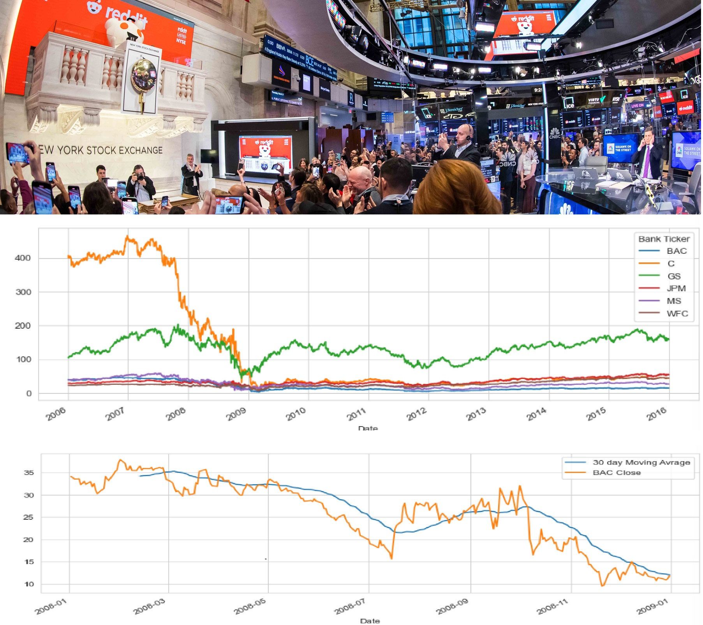

First, data cleaning and preprocessing is performed. Then, for Explanatory Data Analysis, all
the
measures using statistical parameters are quantified and visualized. Also, eight Machine
learning algorithms are compared and using hyper tuning, best parameters are selected.
Finally,
the model is built, evaluated and presented in the scientific format.

In this project, I have cleaned and validated data, followed by explanatory analysis where
results are thoroughly discussed to infer insights. And finally, I have suggested the most
suitable metric for the business, followed by a conclusion and suggestions for the future.
This
project has been done with Python, using following packages:
Pandas, NumPy, Seaborn, SciPy and Matplotlib
.
In this project, I have cleaned and validated data, followed by explanatory analysis where
results are thoroughly discussed to infer insights. And finally, I have suggested the most
suitable metric for the business, followed by a conclusion and suggestions for the future.
This
project has been done with Python, using following packages:
Pandas, NumPy, Seaborn, SciPy and Matplotlib
.
This project revolves around an e-commerce retail corporation. The key question for the company
is whether to give more attention to their application or their website.
Information regarding the e-commerce customer company is included in the CSV
file. Our aim is to utilize LinearRegression from sklearn.linear_model for training our
model with the training data we have. We initialize a linearRegression() model.
The model is considered excellent with a ùëÖ^2 value close to 1, as its variance score is
0.98. This proves that our model is very reliable and fits appropriately.

This project focuses on the financial analysis of the stock market in six USA financial markets.
The effects of historical events including the inauguration of Barack Obama and the recession in
2008 and 2009
are reflected in the market. . It also involves using visualization techniques and improving
proficiency with pandas.
The packages that I have used for this project are: Pandas, Numpy, Matplotlib, Seaborn,
Datetime, Pandas_datareader,
Plotly, and Cufflinks
.
I utilized the Titanic dataset in my python project to predict if a
traveler survived by considering their age and class. By applying
logistic regression and classification, I generated a highly precise
confusion matrix for our model.
.
This Python project focuses on examining the information obtained from emergency calls made
to 911 and it has been found that the top five townships receiving the most 911 calls
are Lower Merion, Abington, Norristown, Upper Merion, and Cheltenham.
Python was utilized for this project, along with the packages listed below:
Pandas, NumPy, Seaborn, and Matplotlib
.

This Covid 19 Data Exploration has been done with SQL Management Server Studio and skills that
have been used are as below:
CTEs, Temp Tables, Windows Functions, Aggregate Functions, Creating Views and Converting Data
Types.
In this project I used SQL Management Server Studio with data from Nashville Housing.
In my project I have performed data cleaning, used different kinds of JOINs, Created ALTER
TABLEs and ETL to automate importing data.

Analysis in this report focuses on data obtained from a British bank in four specific
provinces.
After cleaning and transforming the data, it is employed to analyze wealth distribution
across
age groups, financial status, occupations, and gender. The outcome is displayed in an
interactive dashboard designed to provide clear insights in a user-friendly manner. 
For my Tableau project I have used Data from AirBnB website to simulate a dashboard which
contains:
average price per bedroom, Price Per Zip code and Revenue of the year.
In this project I have used join and other necessary tools to make the dashboard.
Beside this main project there are other projects as such:
Data visualization for gaming and Data visualization with Starbucks.
This Excel project includes data on coffee buyers who have preferences for four distinct coffee
varieties.
On the dashboard, you can find a chart showcasing coffee sales from 2019 to 2022,
as well as the top five customers and their membership status, and a graph highlighting the top
sales countries too.
In this Power BI project, the focus is on Euro exchange rates in major economies worldwide,
revealing Japan, France,
and Germany as the primary creditors to other European nations.
Gray shades indicate countries with low risk and stability, while yellow and orange represent
high-risk nations.
This Excel Project contains data from bike buyers which has pivot tables that show average
income, gender and age of people who buy bikes in addition to the distance they commute.
The other projects are about:
Conditional Formatting , Data Cleaning, Drawing diagrams and XLOOKUP Functions.
The purpose of this study, as a bachelor's project, was to analyze and calculate the necessary
information from the data of the datacube for ESO 388 Dwarf Galaxy. The tool used is python and
using mathematical methods and image processing techniques, following has been achieved:
Summary of Results
-
A reconstructed V-band image showing the galaxy and the surrounding star clusters as
well as some background galaxies.
-
Inference of chemical abundances for all the elements O, N and S together with the
errors.
-
The inclined value of log(O/H) in the central zones confirms existence of WR
stars.
-
calculation of radial pattern for electron density, as well as the temperature and
the
total mass of the ionized halo.